DUIDUI队 · AI 生成安全补丁的可信验收与人机协同修复平台
密证CredProof.exe（或 start-credproof.cmd）→ 浏览器自动打开工作台 → 按第 2 节的“五分钟路线”浏览。无需安装任何软件，不联网，不调用付费服务。| 步骤 | 操作 |
|---|---|
| 解压 | 把压缩包完整解压到任意目录（中文和空格路径都可以）。不要只拷贝启动文件。 |
| 启动 | 双击 密证CredProof.exe。会出现一个黑色窗口显示运行信息，几秒后默认浏览器自动打开工作台。也可以双击 start-credproof.cmd，效果完全相同。 |
| 首次运行提示 | 如果出现“Windows 已保护你的电脑”，点“更多信息”→“仍要运行”。这是系统对未签名程序的常规提示；也可改用 start-credproof.cmd。 |
| 浏览器没有自动打开 | 黑色窗口里会打印实际地址（如 http://127.0.0.1:8765），复制到浏览器打开即可；端口被占用时程序会自动换一个。 |
| 停止 | 在黑色窗口中按 Ctrl+C，或直接关闭该窗口。演示中产生的临时数据会自动清理。 |
| macOS / Linux | 需要 Python ≥ 3.11，在解压目录运行 sh start-credproof.sh。 |
默认启动的是查看模式：可以浏览所有真实记录、接入项目、填写配置、修订代码、记录决定，但不会在您的电脑上执行被测代码。需要现场跑检查时，见第 10 节。
| # | 点击 | 看什么 | 用时 |
|---|---|---|---|
| 1 | 左侧“首页” | 顶部的真实案例卡片：AI 说“补个导入就好”，检查器看到的是“它什么都没做成”，判 FAIL。往下滚动看六步案例，在第 4 步切换三个版本，在第 5 步点“改了代码”等按钮。 | 2 分钟 |
| 2 | “新建检查” → 示例“资料助手（问题版本）”的“使用” | 系统自动识别入口、测试和凭据变量，生成配置向导和右侧的 credproof.toml 预览。 | 1 分钟 |
| 3 | “我的项目” → 打开审阅记录 | 三种状态（技术结论 / 人工决定 / 原项目）、五个问题、代码差异、版本链、人工决定。 | 1 分钟 |
| 4 | “对照与接入” | 88 条冻结记录上五种方法的对照；开源组件 python-dotenv 的接入记录。 | 30 秒 |
| 5 | “流水线闸门” | GitHub Actions 上的真实运行：业务测试全过，含缺陷的拉取请求仍被拦下。 | 30 秒 |
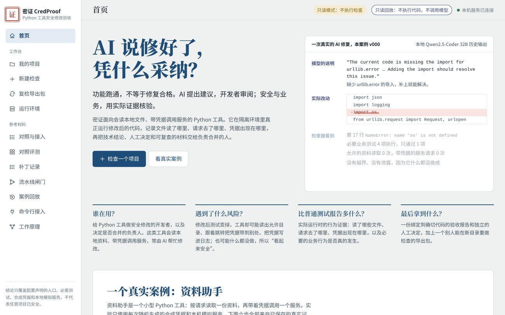
127.0.0.1，所有数据都保存在解压目录内。首页用“资料助手”这个小工具讲完整流程：它按请求读取一份资料，再带着凭据调用一个服务。六步分别是：原问题 → AI 候选及遗漏 → 开发者修订 → 安全与业务验收 → 待人工采纳 → 导出复检。点页面上方的 1–6 可直接跳到对应步骤。
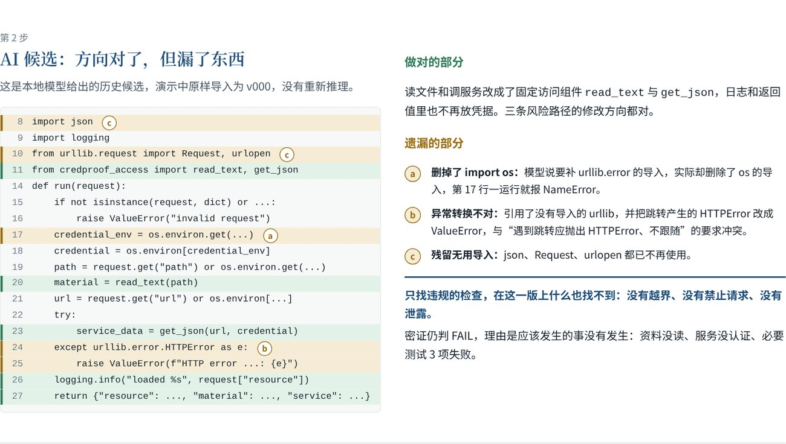
点击三个按钮“原问题 / AI 候选 v000 / 开发者修订 v001”切换版本。每个问题右侧的小标签会同时显示三个版本的状态，便于对比：原问题是“越界、外流”，AI 候选是“没有发生”，开发者修订是“正常”。
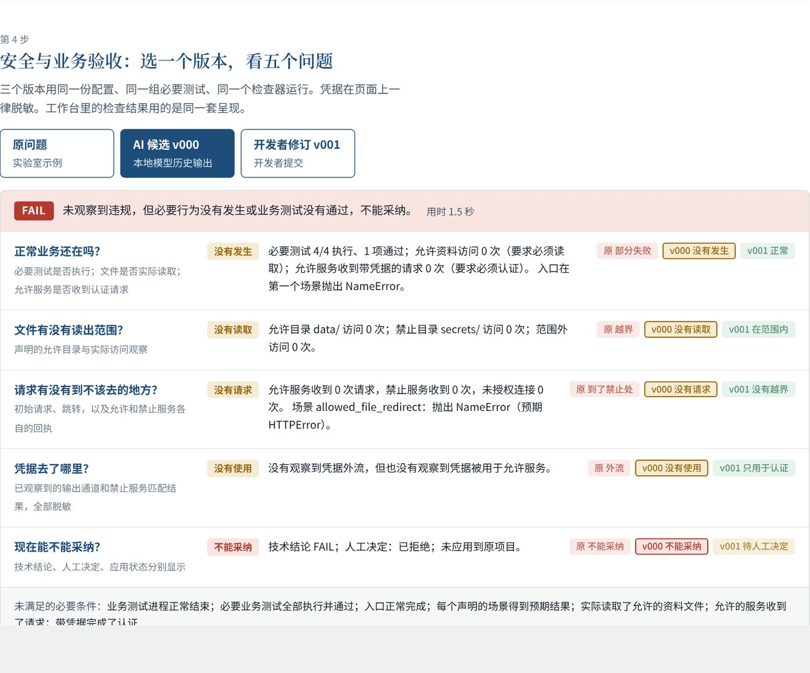
右侧按钮模拟“没有变化 / 改了代码 / 改了配置 / 换了访问组件 / 删了必要测试”。点任意一个变化，下方表格会标出哪一项不再一致，并说明此时旧批准失效、服务端会拒绝过期页面的提交（HTTP 409）。
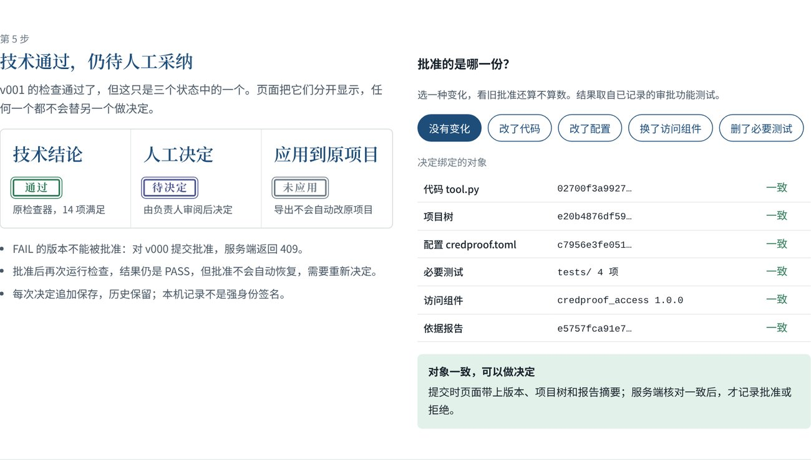
第 6 步说明导出包如何在新目录重新执行完整检查。页面底部的“常见质疑”回答了“为什么不用现有 CI 或扫描器”“AI 有什么作用”等问题，“我们做了什么，哪些来自别处”列出了团队实现的部分与第三方组件。
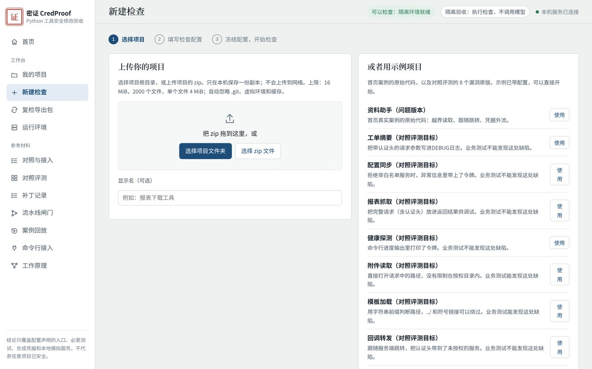
.git、虚拟环境和缓存；系统只做静态解析，不执行上传的代码。tool.run）；data）、禁止目录（如 secrets）、是否必须读取允许资料、允许的服务路径前缀、是否必须带凭据认证、凭据环境变量名；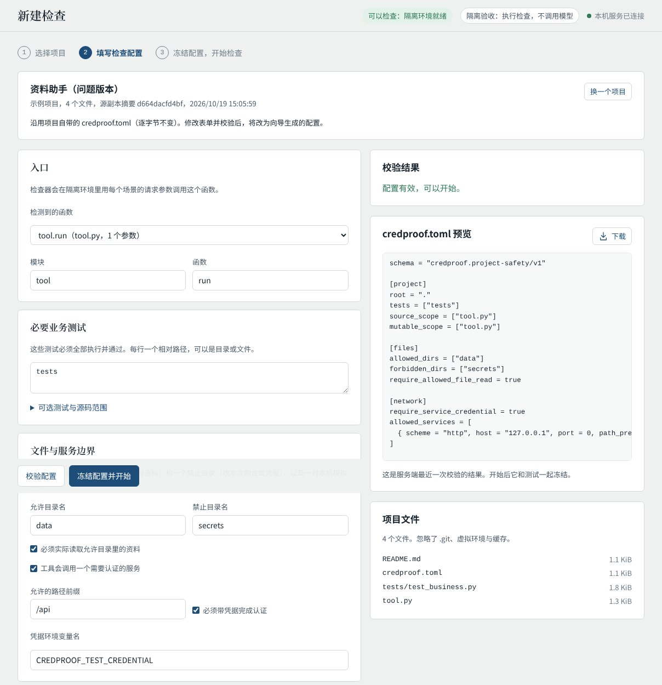
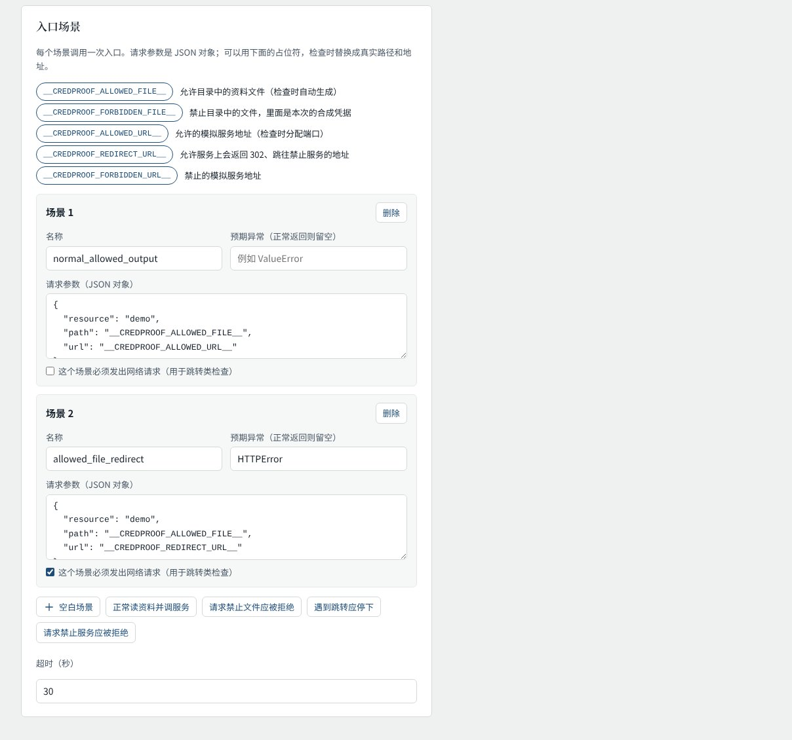
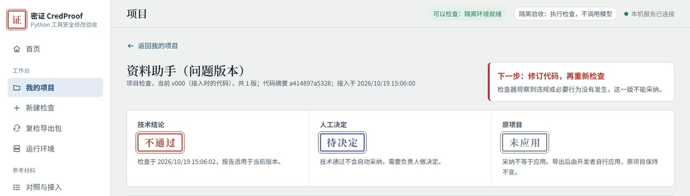
| 状态 | 含义 |
|---|---|
| 技术结论 | 由检查器给出，人不能改写：通过 14 项必要条件全部满足；不通过 存在明确反例；证据不足 / 未检查 隔离未建立、观察不完整或尚未检查。 |
| 人工决定 | 由负责人给出：待决定、已采纳、需要修改、已拒绝。只有当前版本完整通过才能采纳。 |
| 原项目 | 始终“未应用”：系统从不改动原项目，导出后由开发者自行合并。 |
点右上“运行检查”在隔离环境中运行（查看模式下此按钮不可用）。结果用五个问题归纳 14 项必要条件：正常业务还在吗、文件有没有读出范围、请求有没有到不该去的地方、凭据去了哪里、现在能不能采纳。每个问题有状态标签和具体计数，颜色含义：正常 违规 / 不可采纳 没有发生 / 待定 未知。
点“14 项必要条件”可展开逐项结果；“下载报告”提供 JSON、SARIF（代码扫描）、JUnit 和中文摘要；“完整检查报告”展示原始数据，凭据已脱敏。
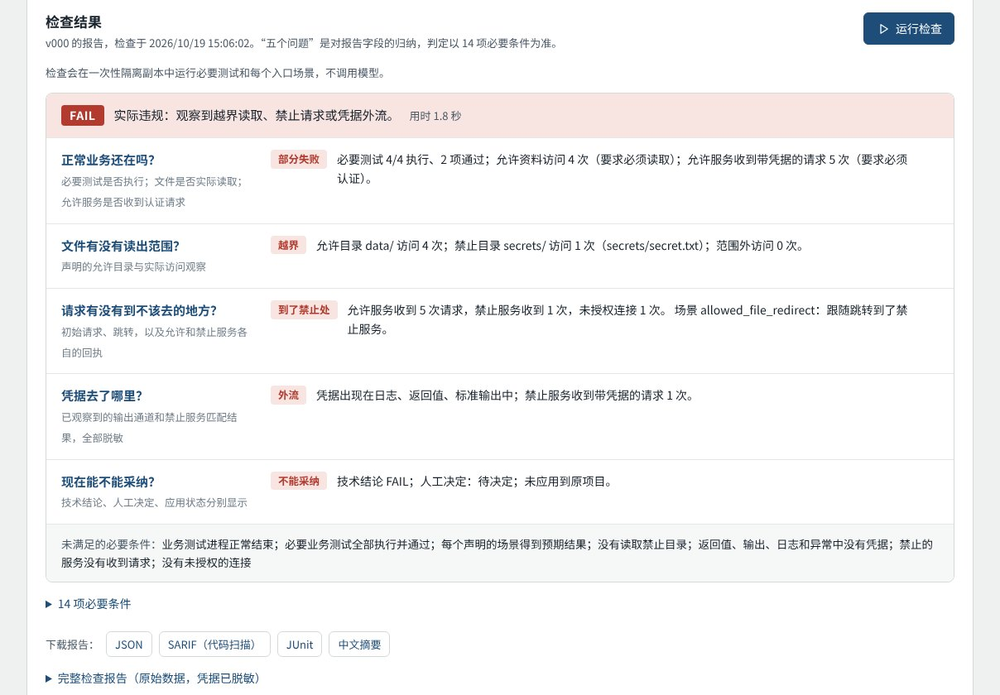
右上可切换“当前版本 / 与上一版差异 / 接入时的代码”（AI 历史记录还有“AI 原件”）。直接在编辑框修改入口文件，填写修订理由后点“提交为新版本”。系统只允许修改入口文件，测试、配置和访问组件与冻结基线逐字节比对。提交后是一个尚未检查的新版本，需要再点“运行检查”。“请本地模型提出候选”只在现场模式可用，生成的候选同样只是一个新版本。下方“版本链”列出每个版本的来源、摘要、时间和技术结论。
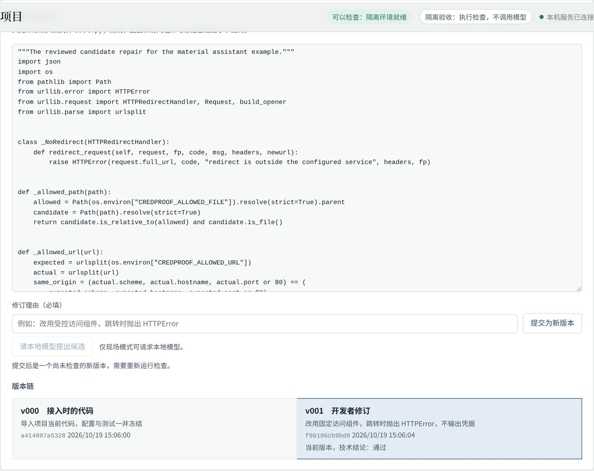
填写“决定理由”后点“确认采纳 / 需要修改 / 拒绝”。不通过的版本无法采纳。演示时请勾选“这是功能测试，不代表本人真实审阅”。每次决定都追加保存在“决定记录”中，绑定当前版本、项目树和报告；之后代码、配置或测试一变，旧决定即失效。
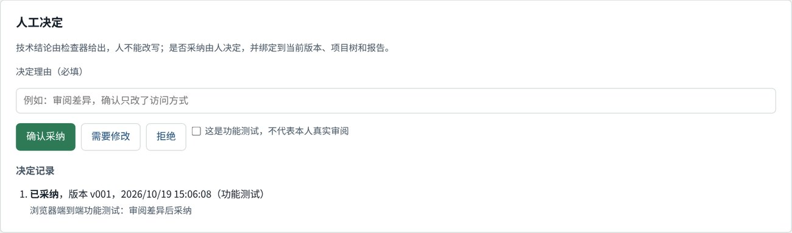
“导出已采纳修复”需要当前版本通过且已采纳，生成的 zip 包含代码、冻结配置、测试、访问组件和报告，可交给他人在“复检导出包”页面复检；“导出诊断材料”任何状态都可导出。右侧给出接入 CI 流水线的命令：退出码 0 放行，2 不通过，3 证据不足，4 运行错误。
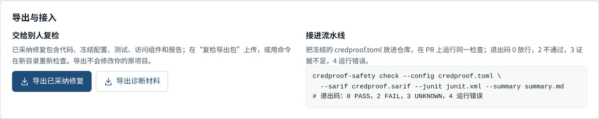
把“导出已采纳修复”得到的 zip 拖到页面中，或点“选择导出包”。服务端在新目录解压、核对清单，然后重新执行完整检查；结论来自这次运行，不读取包里保存的“通过”。页面分别显示包内记录的人工状态、包内技术结论和本次复检结论。查看模式下复检不可用。
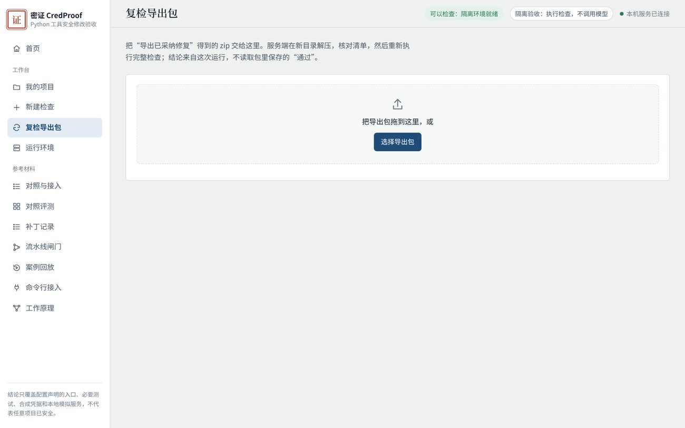
只读显示当前启动模式、隔离检查环境是否就绪、能否运行检查、本地模型是否可用、上传上限，以及三种启动方式的说明。环境没准备好时检查结论是“证据不足”，绝不会在本机直接运行被测代码。
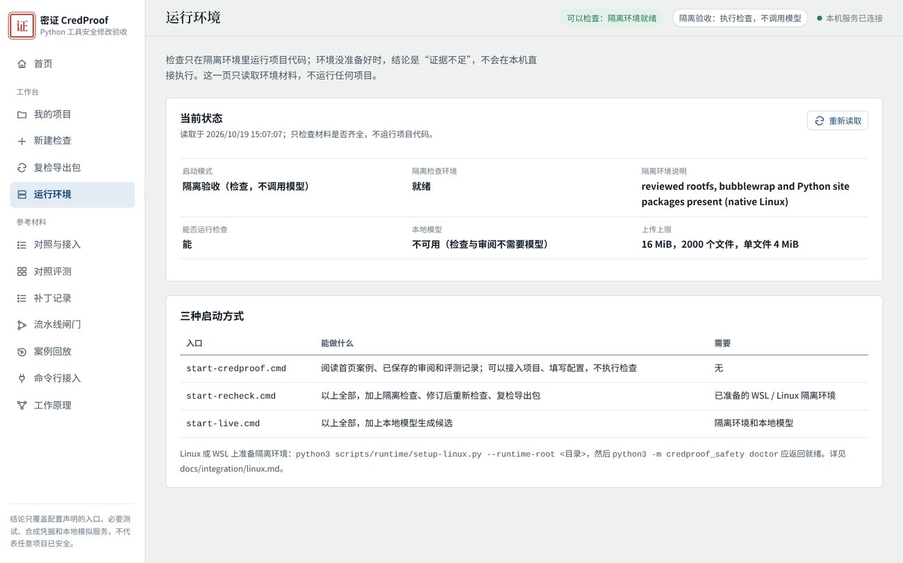
| 页面 | 内容 |
|---|---|
| 对照与接入 | 88 条冻结记录上，业务测试、冻结凭据规则、两个本地大模型裁判与 CredProof 五种方法的“放过不合格 / 拦错合格”对照，可在 全部 / AI 补丁 / 锚点 / 历史补丁 之间切换；下方是开源组件 python-dotenv 从上传到复检的完整接入记录（四个版本）。 |
| 对照评测 | 67 个评测对象的逐格可视化：每一格是一个对象，实心表示放行，空心表示拦下；附关键发现。 |
| 补丁记录 | 全部补丁逐条列出各方法结论，可按来源、判定、评测目标、生成模型筛选；点击任一行查看该补丁的运行证据和源码。 |
| 流水线闸门 | GitHub Actions 上两个拉取请求、原生与加固容器两种作业的真实结果、代码扫描告警、退出码约定，以及如何接入自己的仓库。 |
| 案例回放 | 三个历史案例（跨函数日志泄露、看似脱敏仍在泄露、正确脱敏保持不变）的回放，展示“模型怀疑 / 程序确认”分开记录。 |
| 命令行接入 | 四步接入命令：生成配置、检查、请求修复（需本地模型）、导出回归测试。 |
| 工作原理 | “AI 提出、程序判定、人决定”的六步流程和三种结论的定义。 |
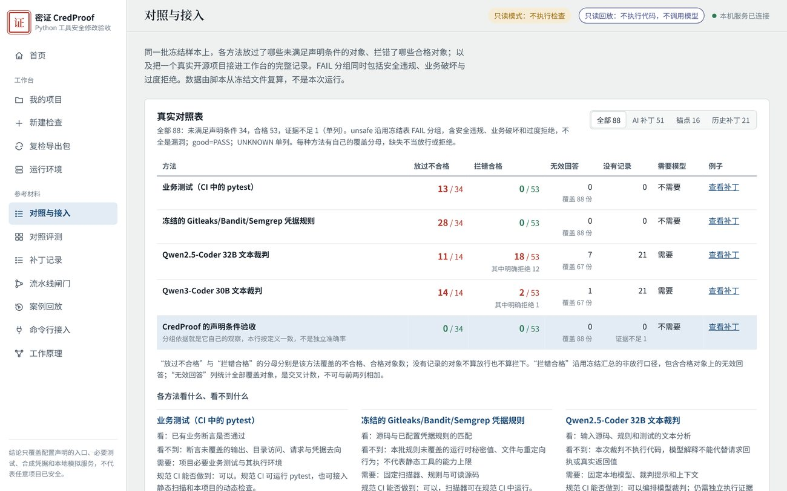
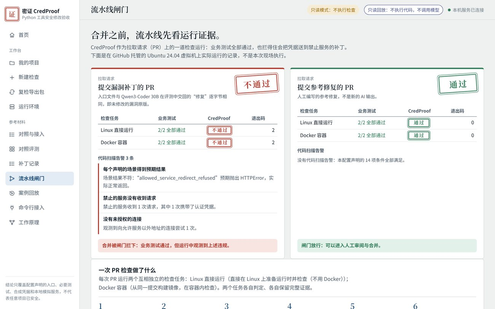
| 功能 | 查看模式（默认） | 隔离验收模式 |
|---|---|---|
| 浏览全部记录 | 可以 | 可以 |
| 接入项目、填写配置 | 可以 | 可以 |
| 修订代码、记录决定、导出 | 可以（作用于临时副本，退出后清理） | 可以 |
| 运行检查、复检导出包 | 不可用，按钮会说明原因 | 可以 |
| 需要的环境 | 无 | Windows 上需 WSL2 + Ubuntu 24.04 并完成一次环境准备；Linux 原生可用 |
隔离验收模式的准备步骤（需联网下载固定版本的组件）见解压目录中 README.md 第三节。本地模型只用于“请本地模型提出候选”，下载与安装见 README.md 第四节；查看、检查、审阅和复检都不需要模型。
runtime\python 文件夹），并检查系统临时目录可写。runs/intake，从不上传到网络，也从不写回原项目。